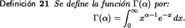
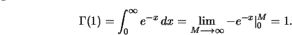
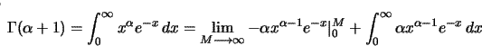
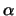
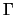
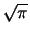
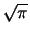
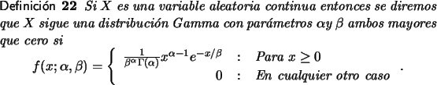
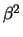

Las distribuciones Gamma
Muchas veces, aún cuando una variable aleatoria no siga una distribución normal es posible que su comportamiento pueda ser modelado con distribuciones que siguen comportamientos similares a una normal pero de manera sesgada.
Antes de poder estudiar este tipo de distribuciones se hace necesario definir una función sumamente importante en el estudio de diversos problemas en matemática.

Por Ejemplo:

Otra propiedad importante se obtiene de aplicar a
( +1) las partes
dv=xdx y
u = e-x, para obtener:
+1) las partes
dv=xdx y
u = e-x, para obtener:

Con un poco de paciencia y regla de L'Hopital se puede demostrar que el primer límite en la última expresión es 0 mientras que la segunda integral es ().
Con esto la función gamma cumple con la propiedad ( + 1) = ()() y de allí si n es entero (n) = (n - 1)!.
También, usando algunos argumentos de cálculo en varias
variables se puede calcular que
( ) = .
) = .
Aparte de un reducido número de argumentos el cálculo de valores de la función gamma debe hacerse utilizando métodos numéricos [3,1]. Para hacer estos cálculos se provee una herramienta, que ha sido programada acorde con [9].

El parámetro puede verse como un parámetro de
forma pues su modificación altera la forma de la distribución
mientras que  funciona como un parámetro de escala.
funciona como un parámetro de escala.
Invitamos al lector que revise la versión electrónica de estas notas a utilizar el graficador para distribuciones gamma y verificar algunas de las formas variando los parámetros.
Si en una distribución gamma  = 1 se dice que es una
distribución gamma estándar.
= 1 se dice que es una
distribución gamma estándar.
Para una variable aleatoria continua, X, con distribución de
probabilidad gamma de parámetros y  , aplicando
un cambio de variable u = y /
, aplicando
un cambio de variable u = y / se tiene que la función de
distribución de probabilidad para X cumple:
se tiene que la función de
distribución de probabilidad para X cumple:
Esta última función se conoce como la función gamma incompleta.
-
E[X] =

- Var[X] = 
Ejemplo 28
Suponga que el tiempo de reacción para iniciar el frenado ante una emergencia, en la población de cierta edad sigue una distribución Gamma con media de .5 segundo y varianza de .1 segundo cuadrado.
Solución
Dado que la esperanza es .5 y la varianza .1 se obtiene que
= 5/2 y
 = 1/5
= 1/5
En ese caso, si quisiéramos calcular la probabilidad de que la respuesta de frenado en una situación de emergencia sea inferior a .72 segundos usando la expresión (5.2) se tiene que
Ejemplo 29
Suponga que el tiempo utilizado por una persona preparando un tipo particular de informe sigue una distribución gamma con media de 20 minutos y varianza 80 minutos cuadrados.
Aplicando el teorema(19) se obtiene que
= 5 y  = 4
= 4
Para determinar la probabilidad de que una persona elegida al azar tarde menos de 24 minutos preparando el informe debe resolverse